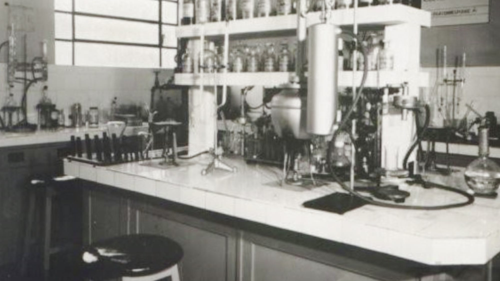

Hanaoka PureLab.
A divisão de reagentes químicos de alto grau de pureza e performance da Hanaoka — desenvolvida para laboratórios, indústrias e aplicações críticas que exigem confiabilidade, rastreabilidade e excelência técnica.
Resultado de mais de 40 anos de know-how da Hanaoka na fabricação, manipulação e controle de produtos químicos, a PureLab nasce para concentrar todo esse conhecimento em uma linha dedicada a reagentes de padrão elevado — fabricação própria, do início ao fim.
 Fabricação própria · Cotia, SP
Fabricação própria · Cotia, SP
Da fabricação ao certificado, sob nosso próprio controle.
Cada reagente PureLab passa por processo próprio de purificação e controle analítico por ICP-OES em nosso laboratório, antes de ser liberado com certificado de análise por lote — sem depender de terceiros para atestar a pureza do produto.
Comece pelos três mais procurados.
Ácido Nítrico PA 65%
Referência nacional em pureza analítica.
Ver especificações →Ácido Sulfúrico PA-ACS
Padrão American Chemical Society.
Ver especificações →Ácido Clorídrico PA-ACS
Alta pureza para análises e controle de processo.
Ver especificações completas →Todos os reagentes da linha PureLab.
26 reagentes de grau PA e PA-ACS, do ácido ao solvente — cada um com fabricação e controle próprios.
Qualidade que sustenta a promessa PureLab.
Nenhum selo aqui é autodeclarado — cada um representa uma auditoria externa independente sobre nossos processos, produtos e práticas.


ISO 9001
Sistema de gestão da qualidade — processos padronizados, documentados e auditados regularmente.
ISO 14001
Gestão ambiental — controle estruturado e contínuo dos impactos ambientais da operação.
EcoVadis
Avaliação independente de práticas ambientais, trabalhistas, éticas e de compras responsáveis.
Prêmio FIESP de Mérito Ambiental
Reconhecimento da Federação das Indústrias do Estado de São Paulo a iniciativas ambientais de destaque.
Prêmio de Preservação da Água
Reconhecimento ao uso consciente e preservação de recursos hídricos nos processos produtivos.
Prêmio DuPont
Reconhecimento a práticas de segurança no manuseio e transporte de produtos químicos.
Together for Sustainability
Iniciativa setorial da indústria química para melhoria contínua de sustentabilidade na cadeia de suprimentos.
Objetivos de Desenvolvimento Sustentável (ODS)
Iniciativas orientadas pela agenda da ONU, com foco em água limpa, produção responsável e ação climática.
Precisa de um reagente de alta pureza?
Fale com nosso time técnico e receba suporte para especificação e homologação.